01 / 04
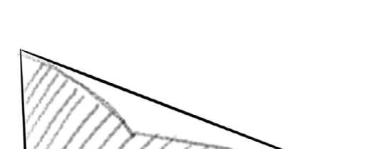
Le terrain.
Partir d'une géométrie triangulaire et de ses limites.
Habiter entre les volumes.
Composer avec le climat tropical.
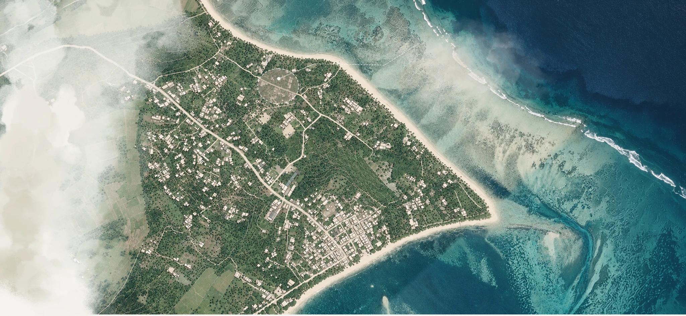
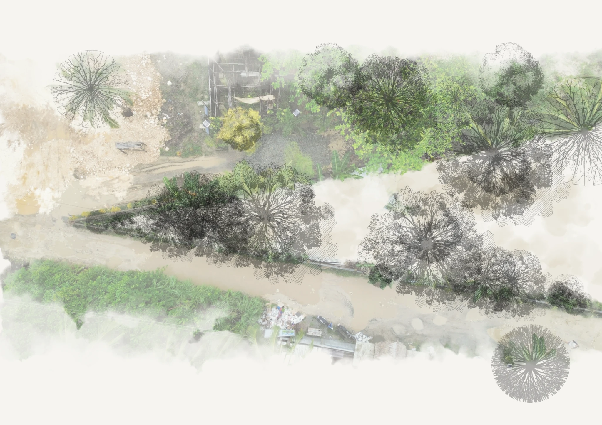
Au large de Mindanao, l'île de Siargao constitue le premier cadre de réflexion : un territoire façonné par l'eau, la végétation et l'habitat.
Santa Fe se développe entre végétation, habitat et océan. Le bâti se densifie près du littoral, puis se disperse dans le paysage.
Cette relation entre nature et architecture devient le point de départ du projet.
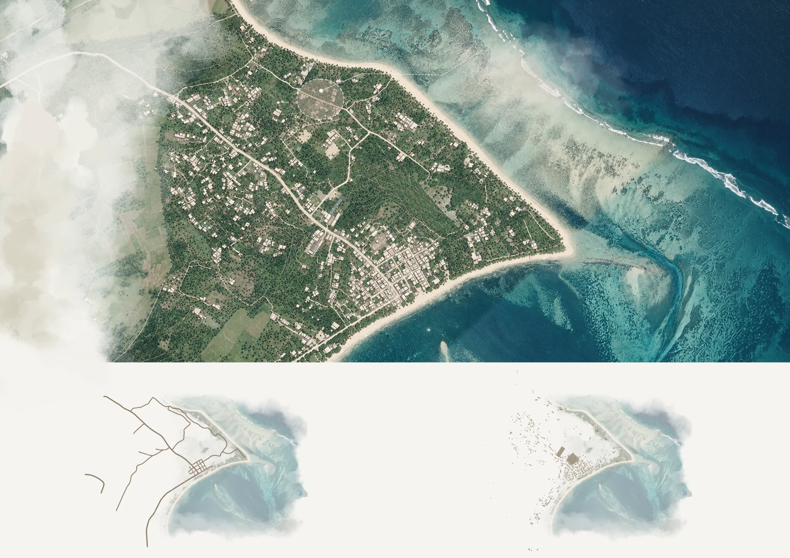
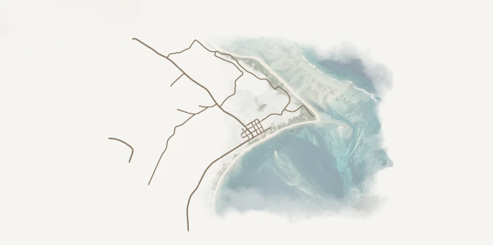
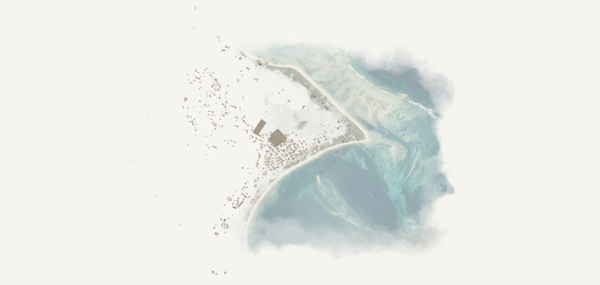
Une parcelle insérée dans un tissu végétal et dans un environnement construit diffus. Ici, les arbres, les accès et les vues deviennent des éléments du projet.
À Siargao, se protéger du soleil et des pluies tropicales tout en laissant circuler l’air devient une donnée fondamentale de conception.
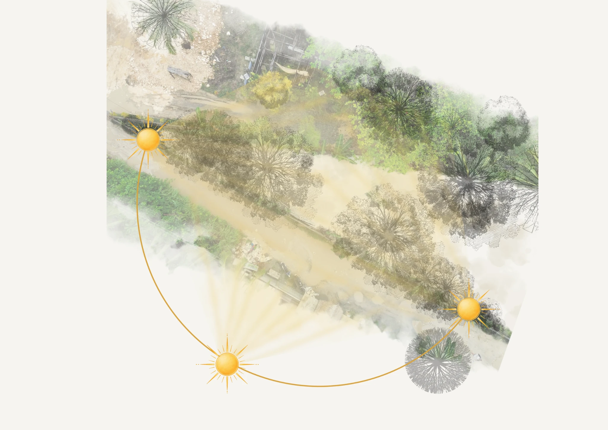
01 / 04Limiter les apports solaires directs et privilégier les espaces ombragés : débords de toiture, protection et filtre végétal.
La parcelle triangulaire ne dicte pas une forme figée. Elle déclenche une recherche sur les pleins, les vides et les relations entre les espaces.

Partir d'une géométrie triangulaire et de ses limites.
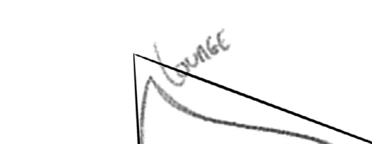
Explorer une implantation en dialogue avec la végétation et le site.
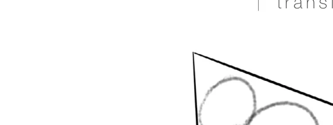
Répartir les fonctions pour libérer des espaces intermédiaires.
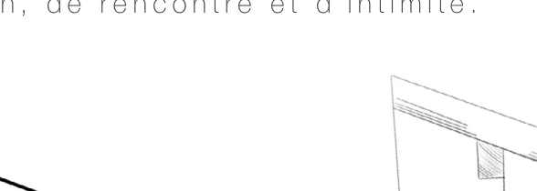
Articuler les espaces collectifs, semi-privés et privés.
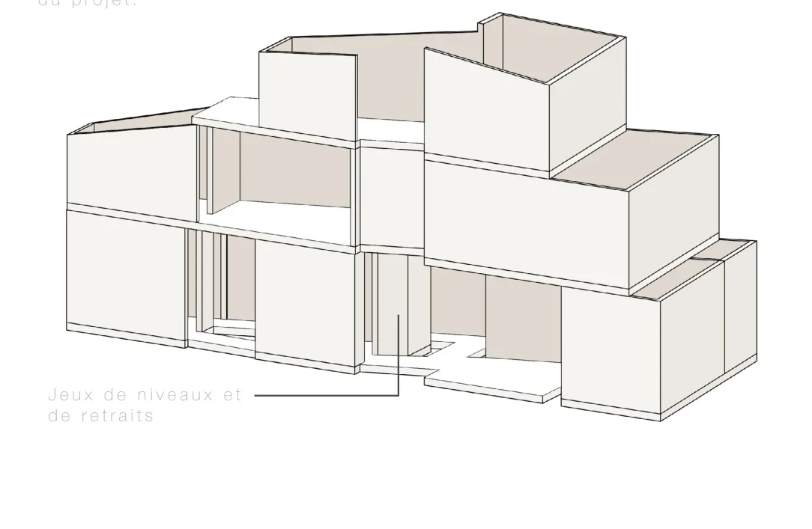
Superpositions, retraits et jeux de niveaux.
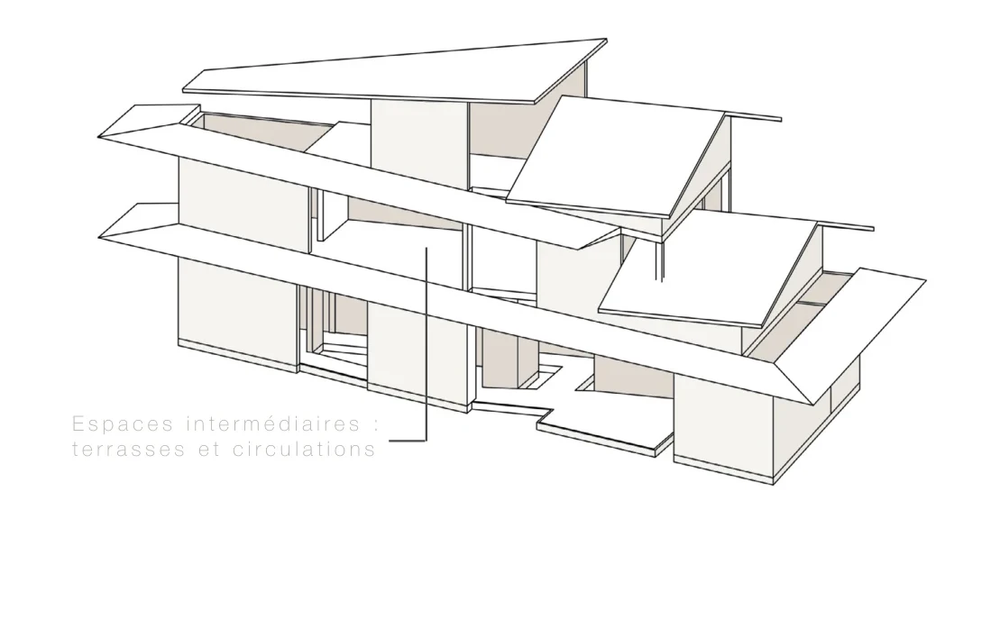
Une composition fragmentée qui favorise les lieux de transition.
Les espaces entre les volumes ne sont plus de simples circulations : ils deviennent des lieux de rencontre, de transition et de vie.

Un hostel pensé comme un ensemble de lieux autonomes reliés par des espaces extérieurs.
Trois niveaux se superposent autour des espaces communs et des lieux plus intimes. Les plans permettent de lire le rôle de chacun.
La coupe révèle la superposition des niveaux, les circulations et le rapport de la construction à son environnement végétal.
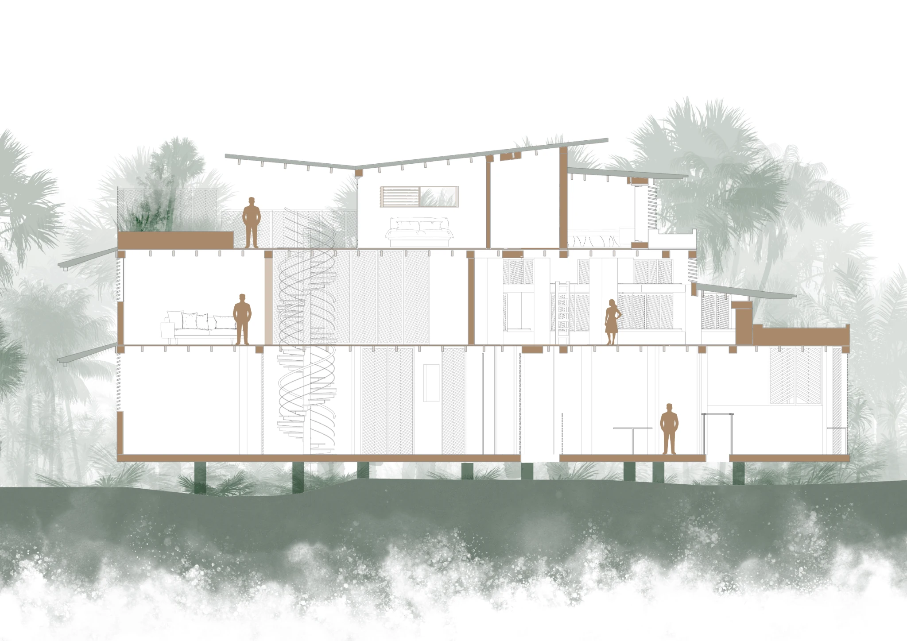
Les vues éclatées permettent de lire séparément les niveaux, les éléments de toiture et les assemblages. Une réflexion qui relie l'architecture à sa mise en œuvre.
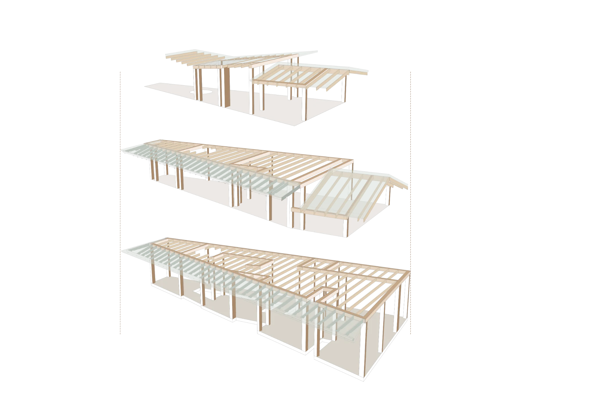
Un assemblage de strates lisibles, du rez-de-chaussée à la couverture. La séparation des éléments rend l'organisation spatiale et constructive compréhensible.
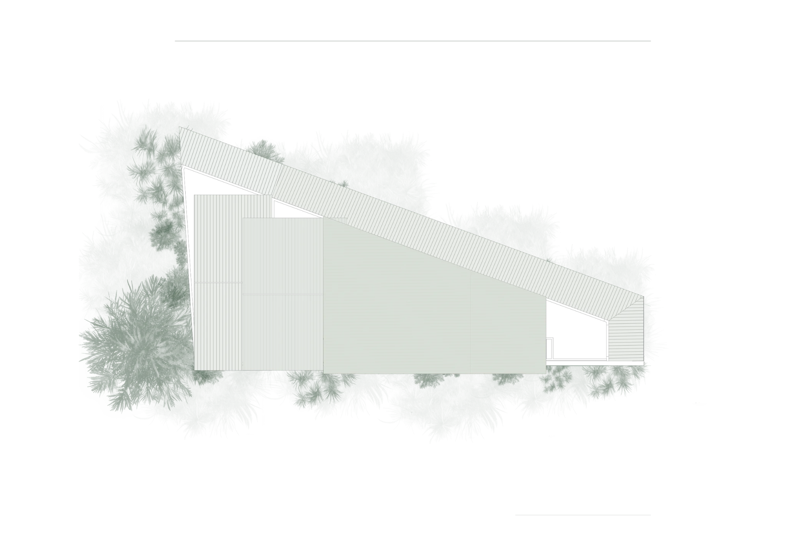
Lire l'implantation et les formes de couverture.
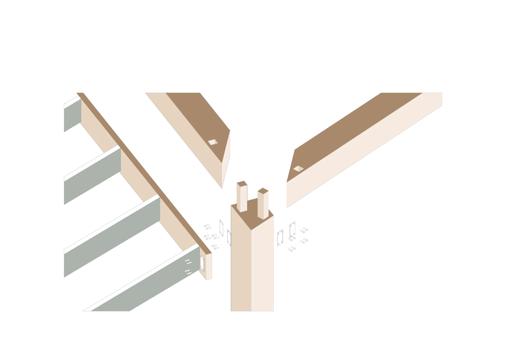
Observer les rencontres entre les éléments en bois.
Le passage à la maquette permet d'éprouver les épaisseurs, les débords de toiture, les filtres et les espaces de transition à une autre échelle.

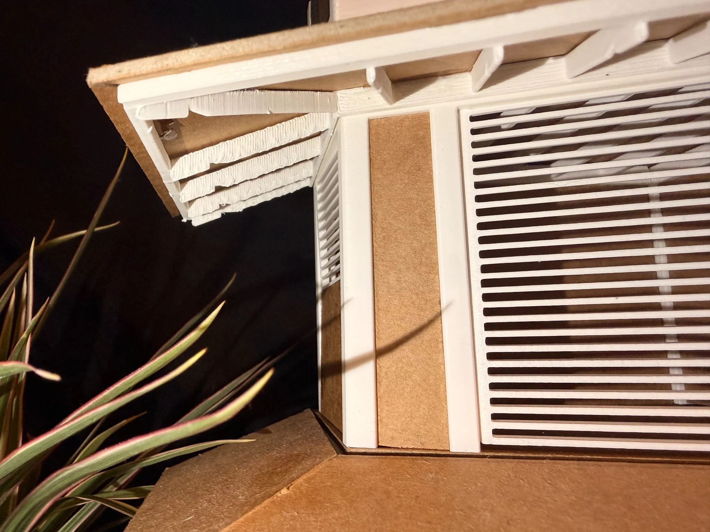
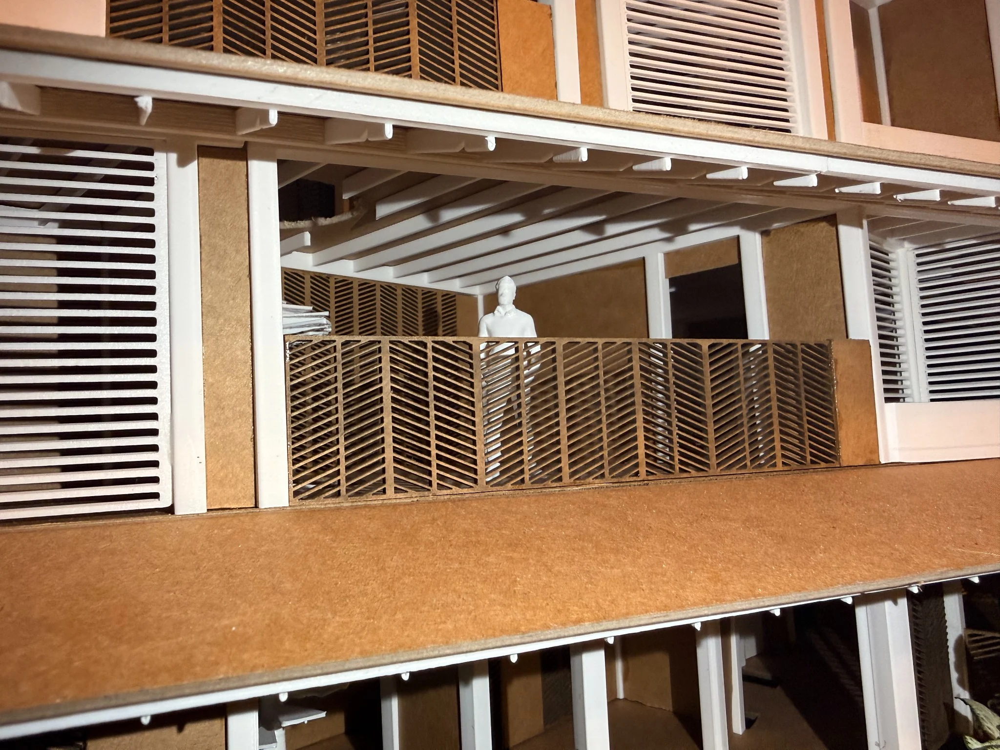
Habiter l'archipel.
Santa Fe, Siargao · Philippines.